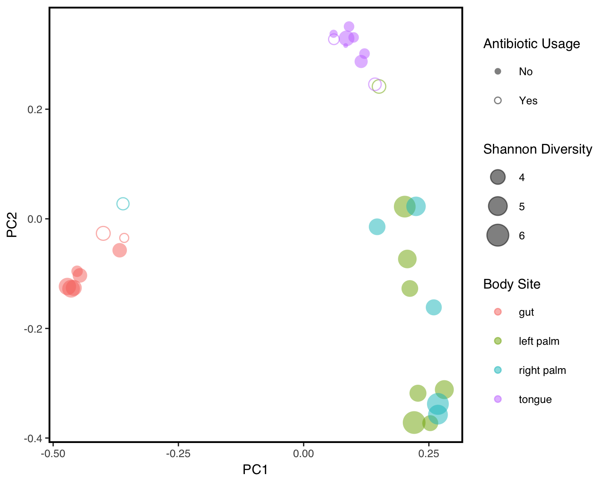
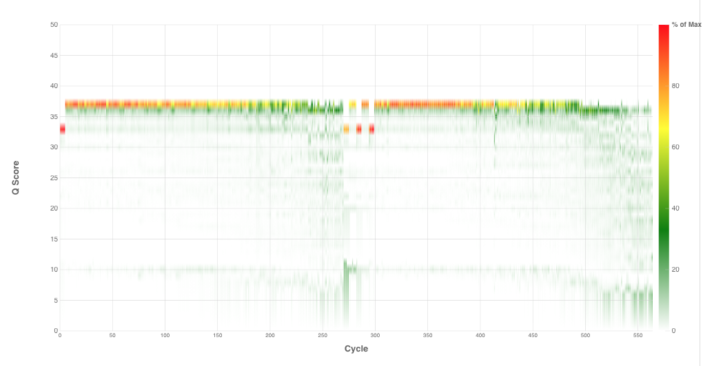
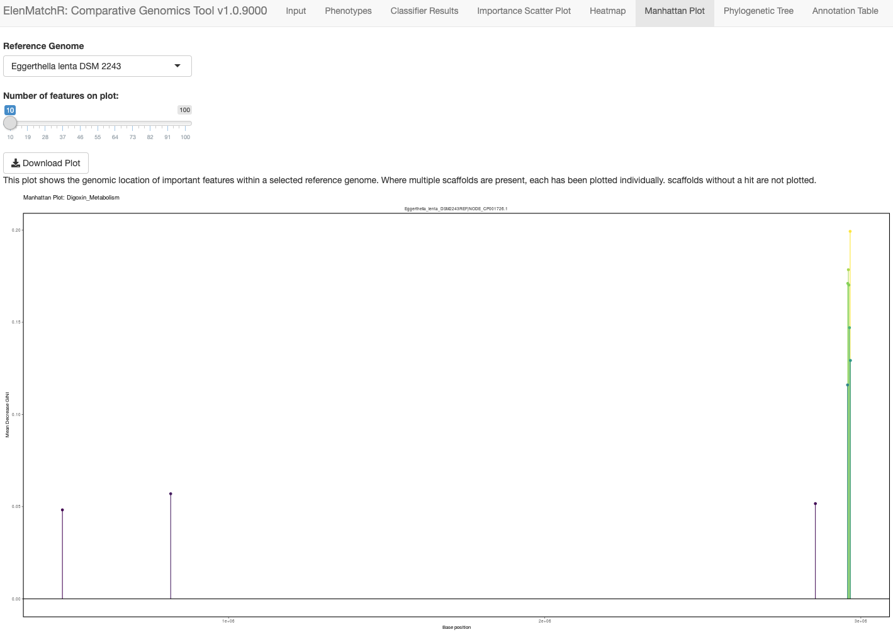
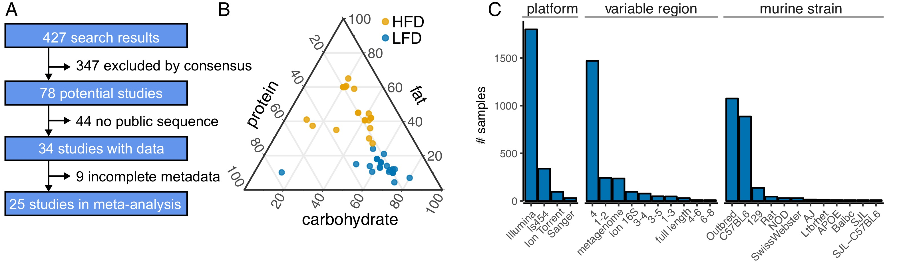

Open Science
Tools, data sets, and protocols.
Wet Lab Protocols
- Enumeration of total bacterial load by qPCR
- Useful media for growing and maintaining gut microbes
- Identification of isolates by 16S rRNA Sequencing
- Automated germ-free testing of gnotobiotic mice
qiime2R
QIIME2 is one of the most commonly used environments for processing microbiome data; however, it's use of a quasi-proprietary format limits its direct usage in R. qiime2R facilitates the direct import of QIIME2 artifacts to R sessions for downstream analysis. Find installation and usage instructions here or download from github.

Amplicon Sequencing and Analysis
From feces to feature table. A one-stop shop for preparing sequencing and analyzing libraries with the help of the Opentrons OT-2 liquid handler. See GitHub Repository.

ElenMatchR
A paired strain-library and comparative genomics tool for discovering microbial enzymes metabolizing drugs and bile acids. Strains are available from the German Culture Collection (DSMZ) and the GUI is available from Github.

High Fat Diets and the Microbiome
Diet is one of the major determinants of microbiome structure and fat is bad for your microbiome... right? As a component of a recent meta-analysis of the effect of high-fat diet on the mouse and human gut microbiome (Bisanz et al., Cell Host & Microbe 2020), we established a pipeline for meta-analysis and released the code and datasets.
